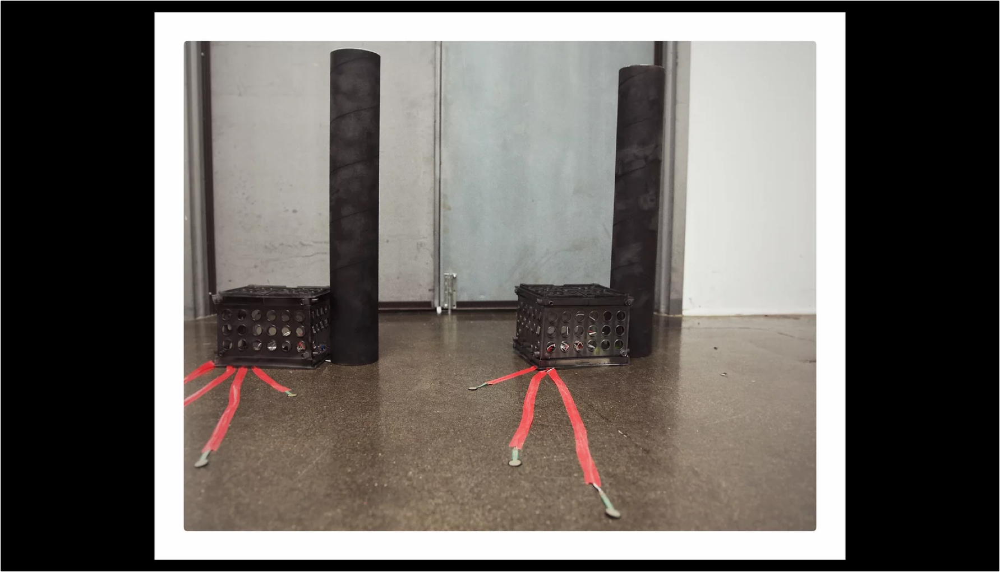

Floor Sensors
Musical Floor
Floor Sensors is an electronic media based sound installation that deals with the production of an interactive audio environment. A series of force resisting sensors is attached on the floor and when an individual steps on each sensor he or she triggers an audio file stored in the memory of an Audio FX Mini and in turn the sound module outputs the files on the speaker.
My current fascination with audio environments lies in my ability as an artist to pattern sound mixing an experimental approach to aural situations in controlled environments. By encouraging participants to select, combine and compose their own sound synthesis, I certainly hope to transmit my ideas of participants to engage intuitively with an electronic audio environment and to transpose the audience as performers.